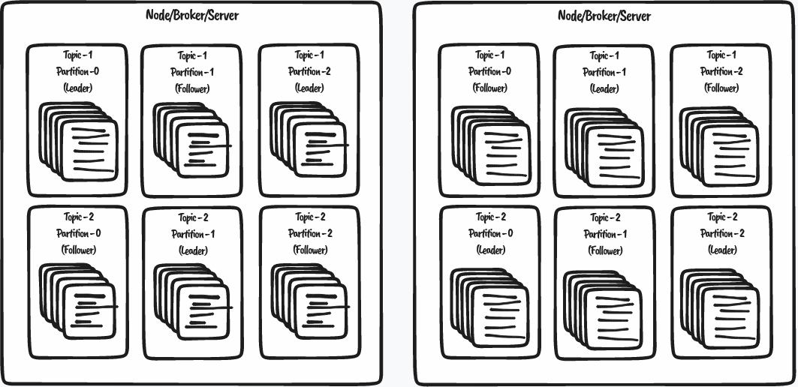
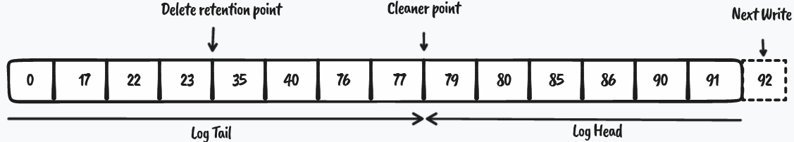
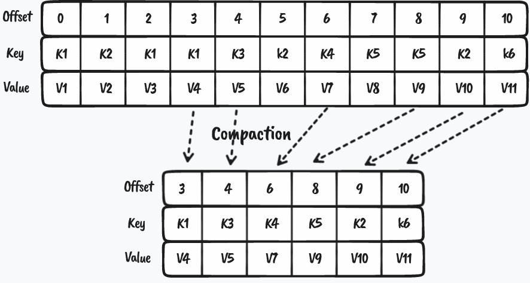

class: center, middle # Kafka ??? Vi skal prate litt om kafka. --- # Kafka ??? Vi skal prate litt om kafka. - vi starter med å ta en liten intro til terminologien - så titter vi litt på hvordan det konseptuelt sett fungerer (pseudocode) - eksempler på bruk - hva det kan brukes til og hva det kanskje ikke bør brukes til --- # Kafka - Terminologi ??? Vi skal prate litt om kafka. - **vi starter med å ta en liten intro til terminologien** - så titter vi litt på hvordan det konseptuelt sett fungerer (pseudocode) - eksempler på bruk - hva det kan brukes til og hva det kanskje ikke bør brukes til For å kunne få en nogenlunde forståelse av hva kafka er, så starter vi med det grunnleggende. Hva er en broker, hvem er denne zookeeper'en? og hva er partisjon? --- # Kafka - Terminologi - Konseptuell oppbyggning med litt pseudokode ??? Vi skal prate litt om kafka. - vi starter med å ta en liten intro til terminologien - **så titter vi litt på hvordan det konseptuelt sett fungerer (pseudocode)** - eksempler på bruk - hva det kan brukes til og hva det kanskje ikke bør brukes til Kafka er ikke noe vi skal prøve å implementere på en times tid. Til det er det altfor komplisert. Men vi kan kanskje få en litt bedre forståelse av hvordan ting henger sammen med å titte litt på kode. Den kommer til å være meget overforenklet, men kan fungere som en grunnleggende konseptuell forståelse. --- # Kafka - Terminologi - Konseptuell oppbyggning med litt pseudokode - Eksempel på bruk ??? Vi skal prate litt om kafka. - vi starter med å ta en liten intro til terminologien - så titter vi litt på hvordan det konseptuelt sett fungerer (pseudocode) - **eksempler på bruk** - hva det kan brukes til og hva det kanskje ikke bør brukes til Vi bruker kafka i ett par settinger på teamet: - bruker i kontekst - chat-løsningen (som aldri ble noe av) - overføring av data til SF Så vi tar en titt på noen av disse for å se om vi forstår noe :finger-crossed: --- # Kafka - Terminologi - Konseptuell oppbyggning med litt pseudokode - Eksempel på bruk - Når passer det å bruke? ??? Vi skal prate litt om kafka. - vi starter med å ta en liten intro til terminologien - så titter vi litt på hvordan det konseptuelt sett fungerer (pseudocode) - eksempler på bruk - **hva det kan brukes til og hva det kanskje ikke bør brukes til** Internt på huset har kafka ofte blitt hauset opp som løsningen over alle løsninger. Det er uten tvil mye positivt med kafka, men det er likevel ikke en løsning som løser alle problemer. Så da tar vi den praten, åpen for diskusjon og spørsmål. Hva tror vi kafka kan fungere til? Hvor vil det ikke fungere? --- # Kafka - Terminologi ??? `Apache Kafka is an open source project for a distributed publish-subscribe messaging system rethought as a distributed commit log.` `Apache Kafka er ett open-source prosjekt for distrubert pub-sub meldinger, gjenoppstått som en commit log`. Så hva betyr det? Hva er en commit-log? Hvilke bestanddeler består kafka av? --- # Kafka - Terminologi  ??? Overordnet så finnes det ett par ord og uttrykk som kan være greia å ha kontroll på. **Broker (Node/Server):** En broker er serveren vi kontakter når vi ønsker å lese eller skrive noe til kafka. Typisk har man flere noder som kjører i parallell slik at om en stopper så vil fortsatt ting fungere. På bilde ovenfor har vi tegnet opp to store "bokser" for å representere dette. _Analogi_: Slack, og alle serverne de har tilgjengelig som vi kan koble oss til for å chatte sammen. **Topic:** Topics er hovedkonseptet man forholder seg til når man skal lese/skrive noe til kafka. Dette er hoved inndelingen av meldinger, og det er på dette nivået vi i NAV gir tilganger til lesing og skriving. F.eks fikk SF tilgang til å lese en topic kalt `personoversikt.henvendelse-henvendelse` når de skulle laste inn all data fra henvendelse. _Analogi_: En spesifik kanal **Record:** På en topic putter vi meldinger eller "Records", dette er den infomasjonen vi ønsker å dele med konsumentene av gitt topic. På kafka er dette bare en byte-array, så man kan serialisere det til det formatet som passer best for situasjonen. e.g xml, json, avro, protobuf etc _Analogi_: En melding til våre venner i en kanal ** Så litt mer i dypden** --- # Kafka - Terminologi ??? **Partition:** Kafka er kjent for å ha ekstremt god ytelse, og spesielt throughput, e.g hvor mange meldinger den kan håndtere. En av måtene dette er løst på er ved å dele trafikk-byrden på flere. Si f.eks at en broker/server bare hadde hadde ett gammelt modem for internett, eller en gammel rusten CPU. Da spiller det egentlig ingen rolle hvor raskt andre deler er, siden man får en bottleneck som struper ytelsen. Men kafka kan da altså skalere "horisonsalt", dvs at man kan få bedre ytelse på "kafka" ved å starte en ekstra server. Ved å bruke flere servere får man også ett mer robust kafka-cluster, siden flere ting kan feile før det faktisk påvirker bruken. **Replicas:** For å forhindre datatap så replikeres data mellom ulike brokere. På bilde er dette marker med `Leader` og `Follower` (eller replica). Når vi skriver en melding til kafka så finner man først ut hvilke partisjon meldinen skal til (hash av keyen gir oss det), deretter kontakter man brokeren som har `leader` for den partisjonen. Brokeren vil deretter skrive meldingen til sin commit log, og deretter kontakte eventuelle followers slik at disse blir oppdatert. Her finnes det er property `acks` som vi kan styre, som sier noe om hvor mange followers som må være oppdatert før vi antar at skrivingen er OK. På bilde er ting veldig balansert, men det er ingenting i veien med at server kanskje bare er en follower for en partisjon om ting ikke går opp. --- # Kafka - Terminologi  ??? Så var det denne "commit-logg" greia vi har nevnt ett par ganger nå. Vi kan tenke på det som en helt vanlig liste, men det er kun lov å legge til nye elementer på slutten av listen. Litt sånn som git sin commit logg, eller hvordan blockchains fungerer (vel, minus en hel del krypto). På bilde er "92" marker striplet linje for å indikere at neste melding vil havne i på offset 92. Offset på en topic/partisjon er i bunn og grunn bare ett teller felt som som er strengt stigende, og holder styr på rekkefølgen på meldingene der. Men det er også to andre "pekere" på tegningen. Delete retention point holder styr på når (og om) innhold kan slettes pga tombstone (tomme /null) elementer. Cleaner point er punktet som sier noe om hvor mye av topicen som har blitt utsatt for log compaction. --- # Kafka - Terminologi  ??? Log-compaction er processen hvor man fjerner duplikate innslag på topicen ved å forkaste meldinger som man oppdager at i senere tid har blitt oppdatert. F.eks henvendelsene vi sender til SF, så vil disse oppdateres når bruker leser meldingen de har mottatt. Da legger vi en oppdatert record på kafka-topicen, men med samme nøkkel som før. Når kafka så kjører log compaction, så vil alle tidligere meldinger bli borte. Dette er også noe av det som gjør kafka litt vanskelig å forholde seg til. For alle disse pekerene og ryddingen som skjer i bakgrunnen er ikke noe man har direkte kontroll på. Det er etter det jeg vet ingen måte å instrusere kafka i å kjøre log compaction for f.eks de 2 første millioner meldinger på en topic. Man har en hel del properties man kan konfigurere på for å få ønsket oppførsel. Men det er ikke alltid like enkelt å se hvilken effekt det vil ha. --- # Kafka - Terminologi <a target="_blank" href="https://softwaremill.com/kafka-visualisation/">https://softwaremill.com/kafka-visualisation/</a> ??? La oss ta en titt på hvordan dette fungerer via a fin simulasjon før vi går videre til å se på litt kode. --- # Kafka - Kode ??? Så la oss raskt se på hvordan de fire grunn funksjonene, subscribe, unscribe, publish og poll, ca fungerer. Dette er så grovt forenklet som det er mulig å få til, vi kan skippe det om vi har dårlig tid. --- # Kafka - Vårt bruk - modiaeventdistribution / modiacontextholder - henvendelse-kafka-migrator - btn-chat-monorepo ??? I teamet har kafka vært på agendaen i noen år. Men vi har ikke veldig utstrakt bruk eller erfaring med kafka. Vi har dog noen steder vi bruker som kan være nyttige å titte: - modiaeventdistribution / modiacontextholder - henvendelse-kafka-migrator - btn-chat-monorepo Sistnevte ble aldri tatt i bruk, men hadde vært kult om den kom på plass. :D Og viser litt av hva som er mulig med kafka mtp latency. Så vi titter på den om vi får tid. --- # Kafka - Bruksområder - Erstatting for MQ - Aktivitetssporing - Metrikker - Logg aggregering - Stream processing - Event sourcing <div class="credits"> <a target="_blank" href="https://kafka.apache.org/documentation/#uses">https://kafka.apache.org/documentation/#uses</a> </div> ??? - event sourcing, er ett annet arkitektur mønster hvor endringer er holdt styr på som en tidsserie. Dette kan minne litt om hvordan vi overfører "hendelser" mellom henvendelse og dialogstyring. - stream processing, er f.eks lengre applikasjons-flyter hvor mange ting skal skje, og man lar data flyte mellom ulike faser ved hjelp av kafka. På den måten kan må få separert ansvarsområder, og lage små rendyrkede tjenenester. Prosesseringen dialogstyring gjør når den mottar en hendelse kan ha mange ulike steg, her kunne vi f.eks utnyttet kafka fremfor persistering til DB mellom hvert steg. **MEN:** det passer ikke til alt. I tilfeller hvor man har krav om synkronitet, så vil ikke kafka være en god fit. F.eks om mininnboks hadde brukt kafka til henvendelse, så ville ikke nødvendig meldingen være lagret i henvendelse når bruker sjekket oversikten sin like etter innsending. I sånne tilfeller kreves det en form for synkron tilbakemelding til bruker. Det kan løses ved at man midlertidig lagrer ting i en liten database, men på ett eller annet tidspunkt går vinning opp i spinninga, og det er like greit å gjøre operasjonen synkront. Videre behandling av meldingen (f.eks oppretting av oppgave til NKS) kunne derimot blitt gjort med kafka. --- class: center, middle # consumer.poll() ???